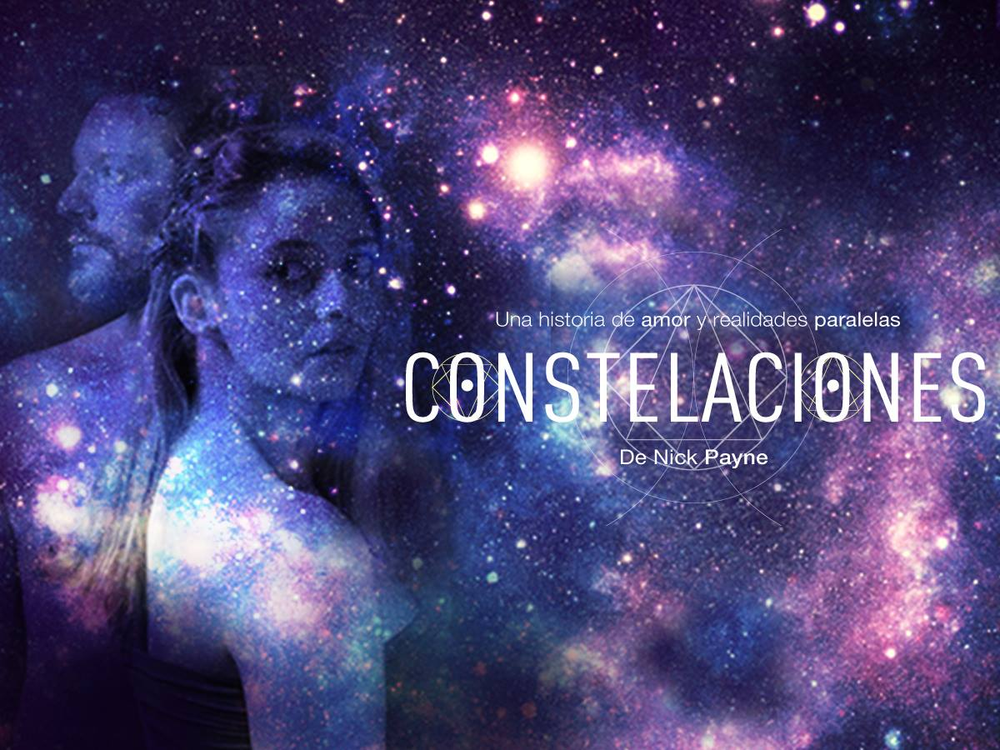
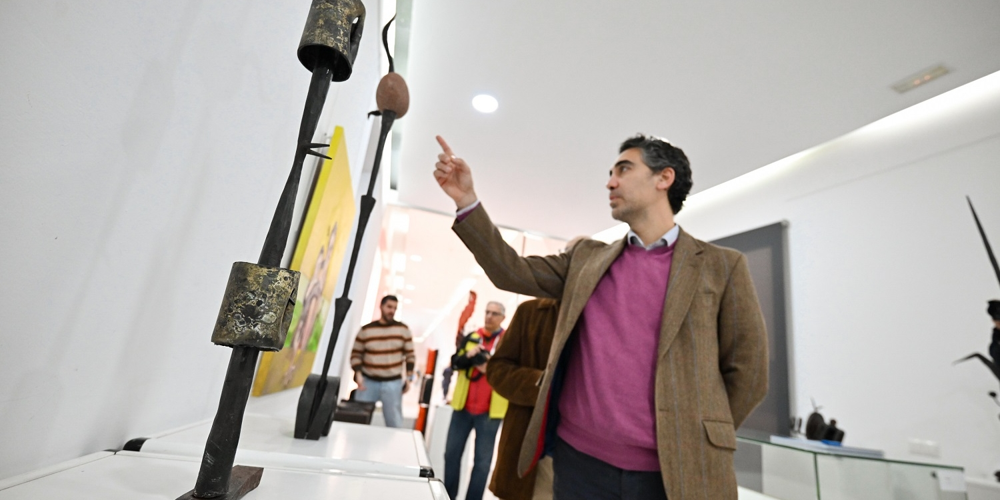

20 de Septiembre de 2026
Fraude

25-06-2026
Silvia Perez Cruz
Nueva y originales canciones para compartir, con sonidos familiares y nuevos horizontes
20-09-2026
Fraude
Pelicula de 1973 sobre un falsificador de arte temido y admirado por museos

21-07-2026
Luis Alvarez Duarte, escultor
Un recorrido a través de la obra sacra y profana del imaginero y escultor andaluz
25-06-2026
Silvia Perez Cruz
Nuevas y originales canciones para compartir con sonidos familiares y nuevos horizontes
21-07-2026
Luís Álvarez Duarte, escultor
Un recorrido a través de la obras del imaginero y escultor andaluz
20-09-2026
Fraude
Pelicula de 1973 sobre un falsificador de arte temido y admirado por museos

15-06-2026
Constelaciones
Una obra de teatro contemporánea que explora la relacion emntre una fìsica cuántica y un apicultor

24-03-2026
Mamma Mía! El Musical. Gijón
comedia romántica con canciones de ABBA sobre una boda y un misterio familiar.

15-08-2026
Cristóbal Avilés
Una exposición dedicada al creador Cristóbal Aviles a traves de obras realizadas con hierro, piedra y cerámica

05-06-2026
Mujeres en la música
Exposicion que reúne imágenes y materiales de artistas como Rocio Jurado o Aitana

06-04-2026
Fiesta de El Bollo. Avilés
celebración primaveral con desfiles, comida en la calle y ambiente festivo que cierra la Semana Santa.

02-10-2026
The Silence
Para su obra autoficticoa el dramaturgo y director Flak Richter se centra en su propia historia familiar